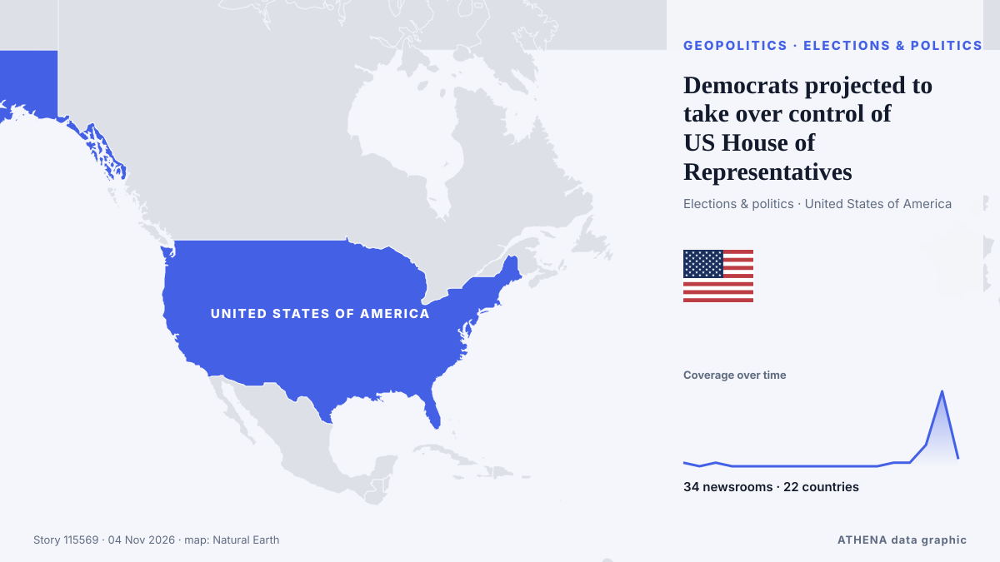

ATHENA Glaux Intelligences — Veille mondiale de l'information — chaque chiffre expliqué
L'actualité mondiale, recoupée entre pays
ATHENA Glaux suit des centaines de médias dans le monde et regroupe leurs articles en événements. Pour chacun, vous voyez combien de médias dans combien de pays l'ont rapporté, qui a été le premier, et un score de risque avec ses raisons — mis à jour toutes les 10 minutes, en sept langues.
En direct de l'actualitéDemocrats projected to take over control of US House of Representatives34 médias · 22 pays · Risque 3.8 · Sources: Lawfare, The Hollywood Reporter

GéopolitiqueDemocrats projected to take over control of US House of Representatives
These are the most consequential U.S. House races in California, which could determine control of Congress as well as the future direction of the Democratic Party. de KQED News (San Francisco)
Les titres sont affichés en anglais, tels que publiés.
US Will Halt $4 Billion in Aid to Israel, Trump Says
Says democrats, left-wing politicians using US financial support to Israel as a talking point to criticise Republicans. de Express Tribune

Aujourd'hui en chiffres
| 06:00 | 571 |
|---|---|
| 07:00 | 435 |
| 08:00 | 2005 |
| 09:00 | 550 |
| 10:00 | 897 |
| 11:00 | 795 |
| 12:00 | 764 |
| 13:00 | 1148 |
| 14:00 | 836 |
| 15:00 | 976 |
| 16:00 | 602 |
| 17:00 | 819 |
| 18:00 | 435 |
| 19:00 | 588 |
| 20:00 | 490 |
| 21:00 | 376 |
| 22:00 | 459 |
| 23:00 | 626 |
| 00:00 | 323 |
| 01:00 | 352 |
| 02:00 | 400 |
| 03:00 | 417 |
| 04:00 | 410 |
| 05:00 | 471 |
Risque des événements du jour
US delivery of 500 Patriot missiles to Ukraine will span 3 years starting in 2030
NATO Supreme Allied Commander Europe General Alexus Grynkewich said the United States continues to supply Ukraine with Patriot interceptor missiles, as well as weapons packages paid for by European… de Ukrinform (English)
First polls close in closely watched U.S. midterm elections
The US midterm elections next month could change the course of American politics at home and – and American policy abroad. de The National
Les plus couverts
Signaux émergents
- Hausse soudaine · ActifJesus de Miguel
- Hausse soudaine · ActifCongressional District
- Hausse soudaine · ActifMount Everest
- Hausse soudaine · ActifNorth Carolina
- Hausse soudaine · ActifMillions of Americans
Alertes officielles
- Red notification for tropical cyclone FOUR-26. Population affected by Category 1 (120 km/h) wind speeds or higher is 1.156 million .Red · GDACS ·
- Cyber chief: UK facing AI-powered attacks on critical infrastructure within two yearsadvisory · UK National Cyber Security Centre ·
- M 6.0 - 165 km NW of Port-Olry, VanuatuM6.0 · USGS ·
- M 6.2 - 43 km ESE of Port-Olry, VanuatuM6.2 · USGS ·
ATHENA sur Telegram
Rejoignez gratuitement le groupe ATHENA Glaux et recevez l'actualité dès sa publication ici :
- les événements urgents de risque 6 ou plus
- un point horaire des principaux événements
- les mises à jour des suivis de risque
- le briefing quotidien chaque matin à 10 h (heure d'Athènes)
- une perspective hebdomadaire
- avertissements officiels, signaux émergents et risques en hausse
Touchez le bouton, Telegram s'ouvre, appuyez sur Rejoindre. Les messages sont en anglais ; vous pouvez couper le son ou partir à tout moment. Pas encore Telegram ? Gratuit sur telegram.org.
Suivi des risques
Plus ›Risques mondiaux — semaine 45, 2026 (2–8 nov.) ›
Géopolitique, politique et sécurité
Plus ›Keisha Lance Bottoms wins Georgia race, becomes first Black woman elected governor of US state
Democrat Keisha Lance Bottoms' win marks a significant shift in Georgia state politics, where Black voters have formed a central part of the Democratic coalition that helped to turn the reliably… de CNA (Channel NewsAsia)
- Élections et politique
US midterms: Democrat Annie Andrews wins US Senate seat in South Carolina upset over Darline Graham
- Diplomatie et sommets
Kremlin confirms trilateral talks on Ukraine set for Nov 10-11 in Abu Dhabi
- Élections et politique
Democrat Jon Ossoff wins reelection to US Senate in Georgia
- Élections et politique
US midterms: All eyes on crucial Michigan Senate race
Économie, finance et marchés
Plus ›Uber pays its drivers ‘wages’ and is liable for $81m payroll tax bill, Australia’s high court rules
Rideshare company unsuccessfully argued it didn’t employ workers and claimed money paid was not wages under NSW law The rideshare behemoth Uber has suffered a bruising loss in Australia’s high court… de The Guardian
- Actions, obligations et marchés
Gold & Silver – A Matter Of Perspective
- Crypto et actifs numériques
North Korea warns of stronger response to US ‘hostility’
- Actions, obligations et marchés
Pierce Brosnan Endorses Callum Turner As Next James Bond As “He’s So Strong”; Josh O’Connor Reacts To Talk Around 007 Casting
- Actions, obligations et marchés
NNPC eyes 10% equity sale, London, New York listings
Commerce, industrie et infrastructures
Plus ›Two Ryanair flights from Dublin searched after potential bomb threats
Ryanair appears to be the worst-affected airline as at least 10 similar incidents were reported across Europe. de Evening Standard (London)
- Aérien, rail et route
Hoax bomb threats disrupt flights in Europe
- Aérien, rail et route
Kazakhstan to Produce 494 Medicines Under $ 862 Million Investment Plan
- Commerce et accords
Trump says US close to trade deal with Canada, Carney says work remains
- Transport maritime et ports
DP World strengthens China–Africa corridor with new shipping link
Énergie, ressources et environnement
Plus ›METLEN Signs Five-Year US LNG Supply Deal With Shell
Greek energy group METLEN has signed a binding five-year agreement with Shell Global LNG for six liquefied natural gas cargoes a year from 2027, turning an earlier memorandum into a firm supply… de Greek Reporter
- Pollution et biodiversité
Mother and daughter dead in suspected grizzly bear attack near Bella Coola
- Pétrole et gaz
New Jersey governor warns port operators against importing Russian diesel
- Climat et politique climatique
CMA CGM, Nike and Gemadept officially launch electric barge in Vietnam
- Pétrole et gaz
Shell to sell NWS LNG stake to XRG
Technologie, IA et cybersécurité
Plus ›Google AI chatbot may break press copyright rules: EU legal adviser
Google’s AI chatbot Gemini may infringe press copyright rules by reusing published content to generate answers, as highlighted by an EU legal adviser in a landmark case involving Hungarian publisher… de IOL
- Espace et satellites
NASA's Swift Observatory to re-enter Earth's atmosphere
- Intelligence artificielle
Anthropic Reports $17 Billion Quarterly Revenue Ahead of IPO
- Cybersécurité
Supermarket freezers in several European countries hit by apparent cyberattacks
- Cybersécurité
Europe on alert after supermarket freezers hit by cyber-attacks in 10 countries
Entreprises et investissement
Plus ›Canva layoffs: design giant to cut or relocate more than 1,200 jobs in major restructure
Chief executive Melanie Perkins describes job cuts as ‘without doubt the hardest moment in our thirteen-year history’ in email to staff Get our breaking news email, free app or daily news podcast… de The Guardian
- Secteurs et risques
Major automakers urge US Congress to pass permanent ban on Chinese vehicles
- Faillites et restructurations
Artists stage flash mobs at scenic spots in Dunhuang, NW China's Gansu
- Fusions et acquisitions
StormGeo acquires Portchain to accelerate Just-in-Time voyage optimisation at scale
- Start-up et innovation
Von der Leyen: Hormuz closure cost Europe €127 billion
Santé, science et recherche
Plus ›Ethiopia attacks kill civilians as health system nears collapse, WHO chief says
The World Health Organization reports that attacks in northern Ethiopia are pushing the region's fragile health system closer to collapse. de ABC News (International)
- Percées
South Carolina elects Democratic senator for first time in almost three decades
- Systèmes de santé
Midterms: Abdul El-Sayed, Mike Rogers face off for Michigan Senate seat
- Découvertes scientifiques
Evidence of red blood cells found in 115-million-year-old dinosaur’s bones
- Recherche médicale
Global cervical cancer cases, deaths forecast to rise by 2050: study
Société, droit et politiques publiques
Plus ›Spanish transport minister resigns days after deadly train crash
At least 69 people were killed and dozens injured in the collision south of the capital, Madrid. de BBC News
- Accidents et urgences
Footballer dies after on-field collision
- Accidents et urgences
Two Australians among those dead in Spain's high-speed train crash
- Accidents et urgences
Jesus de Miguel's tragic death: Wrong footballer faces racist abuse
- Accidents et urgences
Learjet Parts Found Miles from Florida Crash Site, NTSB Says
Sport
Plus ›Photos: Champions League and Tenerife fans pay tribute to De Miguel
CD Tenerife forward Jesus de Miguel died after suffering cardiac arrest following an on-field collision. de Al Jazeera English
- Formule 1 et sport auto
Kansas Elects Its First Democratic Senator in 94 Years
- JO et autres sports
NYC Marathon runner, 24, dies after collapsing 2 miles from finish
- JO et autres sports
Canada to deny visas to Russian hockey players — PM Carney
- Football
Bayern skeleton crew sink Atletico in Champions League
Culture, personnalités et art de vivre
Plus ›Aaron-Roy King, Pang Ron-Pei Jing fall in Hylo Open semi-finals
KUALA LUMPUR: Malaysia's impressive run of winning at least one title at each of the previous three stops of the European swing came to an end after Aaron Tai-Yap Roy King and Hoo Pang Ron-Lai Pei… de New Straits Times
- Cinéma et télévision
‘The Remarried Empress’ Gets Surprise Early Premiere On Disney+/Hulu
- Cinéma et télévision
‘India went through a dark phase’: Sachin Tendulkar opens up on captaincy stint
- Têtes couronnées et personnalités
King Charles calls slavery 'monstrous injustice' as PM mulls apology
- Musique
My Chemical Romance Leads ‘Parade’ of Reissues Marching Onto Billboard 200 Albums Chart